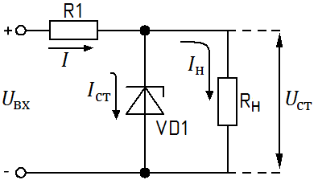
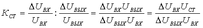
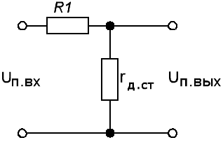
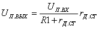
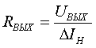
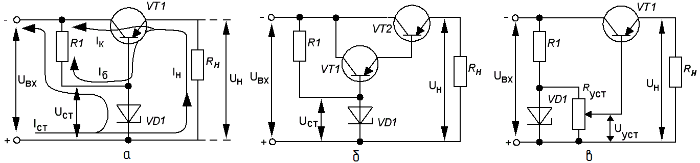
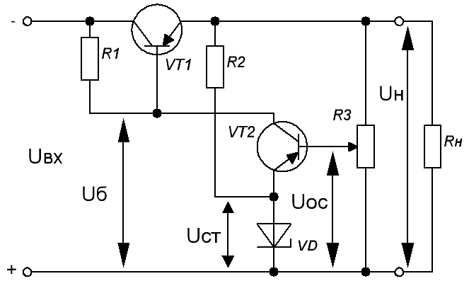
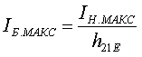
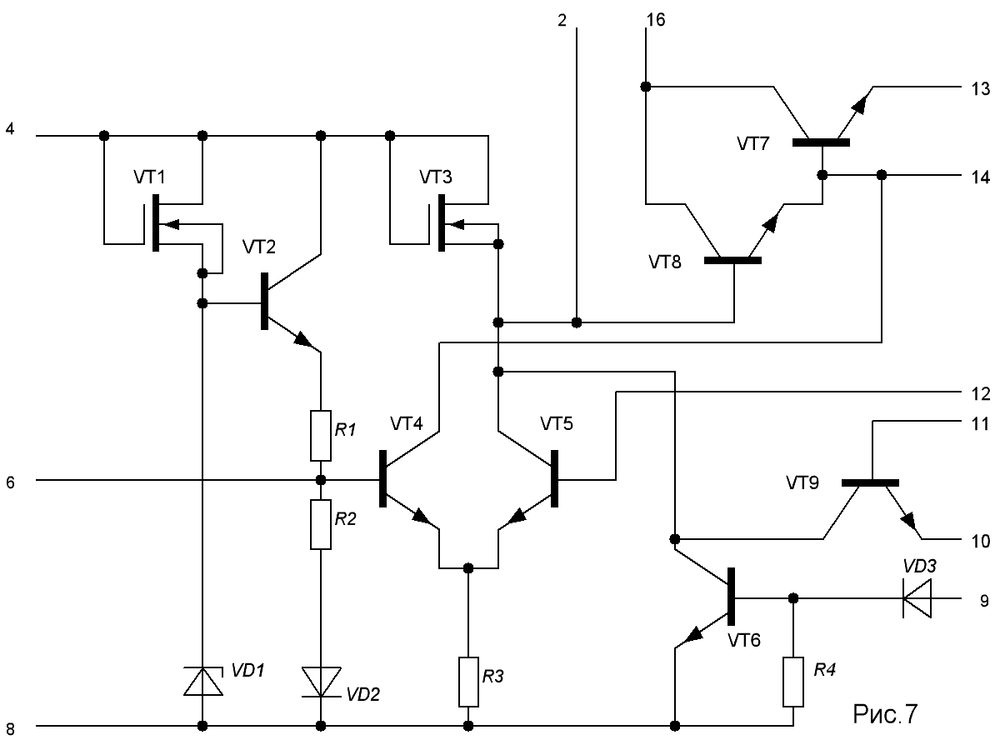
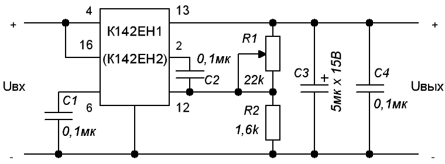

Параметрический стабилизатор напряжения
Простейшим стабилизатором напряжения является стабилизатор на кремниевом стабилитроне, схема которого приведена на рис. 1.

Рис. 1 - Схема простейшего стабилизатора напряжения
Схема на стабисторе выглядит аналогично с той лишь разницей, что полярность включения стабистора прямая.
Для нормальной работы такого стабилизатора необходимо, чтобы ток Iст, протекающий через стабилитрон, не был меньше, чем Iст мин, и больше, чем Iст макс . При изменении тока, протекающего через стабилитрон в этих пределах, на нем и на подключенной параллельно ему нагрузке RH напряжение, называемое напряжением стабилизации Uст стабилитрона, будет оставаться постоянным. Однако для стабилитронов одного и того же типа это напряжение будет неодинаковым. Поэтому в справочниках приводятся обычно минимальная и максимальная границы значений напряжения или указывается номинальное напряжение стабилизации Uст и его допустимый разброс ΔUст.
Если напряжение Uвх, поступающее на вход стабилизатора (рис. 3), в процессе работы может изменяться от некоторого наименьшего значения Uвх мин до наибольшего Uвх макс, то при неизменном напряжении на стабилитроне все изменения входного напряжения должны гаситься на резисторе R1. Поэтому резистор R1 называют гасящим, или балластным. Чтобы при этом изменения тока, протекающего через стабилитрон, не выходили за пределы, ограниченные значениями Iст мин и Iст макс, нужно правильно рассчитать сопротивление этого резистора.
Отношение относительного изменения напряжения на входе стабилизатора
(ΔUвх/Uвх) к относительному изменению напряжения на его выходе (ΔUвых/Uвых) называют коэффициентом стабилизации (Кст).
Следовательно,

Стабилизатор на кремниевом стабилитроне имеет еще одно свойство. Дело в том, что стабилитрон обладает очень малым сопротивлением переменному (пульсирующему) току, называемым дифференциальным сопротивлением — rд ст. Чем круче характеристика в области пробоя, тем меньше дифференциальное сопротивление стабилитрона. Для большинства маломощных стабилитронов rд ст=5...15 Ом. Вместе с резистором R1 дифференциальное сопротивление стабилитрона образует делитель (рис. 2), между плечами которого распределяются как постоянная составляющая выпрямленного напряжения, так и его пульсации.

Рис. 2 - Делитель
Если амплитуду пульсаций на входе стабилизатора обозначить через Uп вх, а на выходе — через Uп вых, то в соответствии с рис. 2 получим

Так как rд.ст >> R1, то rд.ст/(R1+ rд.ст)<< 1 и оказывается, что Uп вых<<Uп вх.
Снижение пульсаций в выходном напряжении свидетельствует об уменьшении коэффициента пульсаций. Таким образом, простейший стабилизатор помимо стабилизации выходного напряжения осуществляет сглаживание пульсаций в выходном напряжении.
Важным параметром стабилизатора является его выходное сопротивление (RВЫХ), которое определяется как отношение изменения выходного напряжения стабилизатора к изменению тока нагрузки (ΔIH) при неизменном входном напряжении:

Для простейшего стабилизатора:
Rвых= rд ст.
Транзисторные стабилизаторы напряжения
Рассмотренный стабилизатор напряжения на кремниевом стабилитроне имеет простое устройство, малое количество деталей и с успехом может применяться тогда, когда ток нагрузки не превышает среднего значения тока, протекающего через стабилитрон и находящегося в пределах между Iст мин и Iст макс. При использовании стабилитронов типа Д808...Д814 ток нагрузки не должен превышать 20...30 мА. При больших токах нагрузки необходимы более мощные стабилитроны. Недостатком простейшего стабилизатора на кремниевом стабилитроне является потеря части напряжения на ограничительном резисторе R1, что приводит к снижению КПД стабилизатора. Кроме того, у этого стабилизатора сравнительно небольшой коэффициент стабилизации и значительное выходное сопротивление. Поэтому во всех случаях, когда требуется получить стабилизированное напряжение на нагрузке при большом токе, протекающем через нее, применяют транзисторные стабилизаторы напряжения. В качестве такового без существенного увеличения числа элементов и усложнения схемы используют транзисторный фильтр со своеобразной следящей системой, которая в зависимости от изменения напряжения на входе фильтра или на его выходе за счет изменения тока нагрузки изменяет сопротивление транзистора таким образом, что напряжение на выходе этого фильтра — стабилизатора остается неизменным.
Схема транзисторного стабилизатора напряжения изображена на рис. 3, а. Предназначен для стабилизации входного напряжения, причем всегда Uвх больше Uвых. Основан на схеме включения транзистора VT с общим эмиттером 'эмиттерный повторитель') - выходное напряжение на эмиттере практически повторяет входное напряжение на базе. В нее входит рассмотренный уже стабилизатор на кремниевом стабилитроне VD с ограничительным резистором R1. Нагрузкой стабилизатора служит базовая цепь транзистора VT, в эммитерную цепь которого включена основная нагрузка Rн. Поэтому для этого стабилитрон VD выбирают исходя из требуемого выходного напряжения так, что напряжение стабилизации стабилитрона больше выходного напряжения на 0,1-0,3 В.

Рис. 3 - Схемы транзисторных стабилизаторов напряжения
Эмиттерный и коллекторный токи транзистора в десятки раз превышают ток базы, причем Iэ << Iк. Поэтому при токах базы, равных единицам миллиампер, в коллекторной и эмиттерной цепях протекают токи, измеряемые десятками и сотнями миллиампер (мА).
Рассмотрим работу транзисторного стабилизатора. Из рис. 3, а видно, что напряжение на нагрузке Uн отличается от напряжения на стабилитроне Uст на напряжение, падающее на эмиттерном переходе Uэб транзистора VT2, т. е.
Uн=Uст-Uэб.
Если напряжение на входе стабилизатора увеличится, оно сразу передастся и на его выход, что приведет к увеличению тока, протекающего через нагрузку Iн, и напряжения Uн. Поскольку напряжение на стабилитроне практически не изменяется, возрастание напряжения на нагрузке вызовет уменьшение напряжения Uэб, тока базы транзистора VT и увеличение сопротивления перехода коллектор—эмиттер. Вследствие увеличения сопротивления перехода коллектор—эмиттер на этом переходе будет большее падение напряжения, что повлечет за собой уменьшение напряжения на нагрузке. При уменьшении входного напряжения, наоборот, напряжение Uэб повысится, что повлечет за собой увеличение тока базы, уменьшение сопротивления перехода коллектор—эмиттер и напряжения на этом переходе.
Таким образом, в рассматриваемом стабилизаторе напряжения транзистор VT совместно с сопротивлением нагрузки RH образует делитель входного напряжения, причем сопротивление транзистора изменяется так, что компенсируются всякие изменения входного напряжения. Такой стабилизатор называют компенсационным, а транзистор VT с изменяющимся сопротивлением коллекторного перехода — регулирующим.
Тразистор выбирают исходя из:
- предельного эмиттерного тока, который с запасом должен быть меньше тока через нагрузку;
- допустимого падения напряжения на коллекторном переходе, которое определяетя разностью входного и выходного напряжений;
- максимальной мощности, рассеиваемой на коллекторном переходе, которая определяется произведением падения напряжения на коллекторном переходе на ток в нагрузке;
Резистор R можно рассчитать по формуле:
R = (Eср- Uст)/(Iср+ Iн);
Eср - среднее значение входного напряжения;
Uст=(Uст.макс+Uст.мин)/2 - среднее значение напряжения стабилизации стабилитрона;
Iср=(Iмакс+Iмин) - средний ток через стабилитрон;
Iн - ток нагрузки.
Так входное сопротивление эмиттерного повторителя очень велико, то им можно пренебречь.
КПД такого стабилизатора примерно равен Uвых/Uвх, обычно это недостаточно, поэтому область применения ограничена из-за больших потерь при высоких мощностях.
Выходное сопротивление этого стабилизатора составляет несколько ом, а коэффициент стабилизации примерно такой же, как у простейшего стабилизатора, выполненного на резисторе R1 и стабилитроне VD. Но так как ток нагрузки через ограничительный резистор не протекает, а сопротивление постоянному току перехода коллектор — эмиттер транзистора VT мало, стабилизатор напряжения на транзисторе обладает более высоким КПД по сравнению со стабилизатором на кремниевом стабилитроне. Если вместо VT использовать составной транзистор, состоящий из маломощного транзистора VT1 и транзистора большой мощности VT2 (рис. 3, б), то можно осуществить эффективную стабилизацию напряжения при токах, протекающих через нагрузку, измеряемых амперами.
При таком включении VT1 и VT2 в качестве тока базы мощного транзистора VT2 используется ток эмиттера маломощного (или средней мощности) транзистора VT1, а током нагрузки стабилитрона VD является ток базы VT1, который в десятки раз меньше тока базы VT2.
Важной особенностью транзисторных стабилизаторов напряжения является еще следующее. Напряжение на нагрузке Uн отличается от напряжения стабилизации кремниевого стабилитрона Uст на напряжение, падающее на переходе эмиттер—база Uэб транзистора VT (рис. 3, а). Для германиевых транзисторов напряжение UЭБ составляет всего 0,2...0,5 В, а для кремниевых — не более 1 В. Поэтому если вместо стабилитрона VD взять стабилитрон с другим напряжением стабилизации, то изменится и напряжение на нагрузке. Это позволяет создавать регулируемые стабилизаторы напряжения. Одна из схем такого стабилизатора дана на рис. 3, в. В ней кроме ограничительного резистора R1 используется дополнительный переменный резистор RУСТ, подключаемый параллельно стабилитрону VD. Напряжение на нагрузке Uн вместе с напряжением на переходе эмиттер—база Uэб транзистора VT равно напряжению Uуст, снимаемому с переменного резистора RУСТ, т. е.
Uн+Uэб=Uуст,
откуда следует:
Uн = Uуст - Uэб.
При перемещении движка переменного резистора RУСТ будет изменяться снимаемое с него напряжение и, следовательно, напряжение на нагрузке Uн. Таким способом можно регулировать напряжение на нагрузке от нуля до значения, равного напряжению стабилизации стабилитрона VD (точнее, до значения Uст-Uэб).

Рис. 4 - Схема мощного регулируемого стабилизатора напряжения
Если ток базы регулирующего транзистора VT1 велик, в стабилизатор вводят дополнительный усилитель постоянного тока. Одна из схем такого стабилизатора приведена на рис. 4. Напряжение, подаваемое с движка потенциометра R3 на базу транзистора VT2, на котором выполнен дополнительный усилитель постоянного тока, называется напряжением обратной связи Uос. Из рисунка видно, что
Uос=Uст+ Uэб.
Ток, протекающий через потенциометр R3, не должен превышать 10...15 мА. Сопротивление резистора R1 обычно составляет несколько килоом.
Коэффициент стабилизации стабилизатора около 100, а выходное сопротивление составляет десятые доли ома.
Расчет компенсационного стабилизатора напряжения начинают с выбора регулирующего транзистора VT1. Максимально допустимое его напряжение Uкэ макс должно превышать наибольшее напряжение на входе стабилизатора Uвх макс, а максимально допустимый ток коллектора Iк макс - быть больше предельного значения тока нагрузки.
Максимальная мощность, рассеиваемая транзистором VT1, определяется по формуле:
Pмакс=(Uвх макс - Uвых)Iн макс
Значение этой мощности должно составлять не более 75% от максимально допустимой мощности Рк макс приводимой в справочнике. Если это условие невыполнимо, необходимо выбрать другой транзистор — с большим значением Рк макс.
Определив по справочнику для выбранного транзистора VT1 минимальное значение статического коэффициента передачи тока базы h21E, рассчитывают максимальный ток базы, соответствующий максимальному току нагрузки:

Поскольку ток Iб макс транзистора VT1 является током нагрузки простейшего стабилизатора, состоящего из резистора R1 и стабилитрона VD, то по его значению находят сопротивление резистора R1 по условию:
(Uвх.макс - Uст.мин)/Iст.мах ≤ R1 ≤ (Uвх.мин-Uст.мин)/(Iст.мин - IБ.макс)
Сопротивление резистора R2 можно определить по формуле:
R2=Uвых/Iн·(0,05...0,1)
Для нормальной работы стабилизатора требуется, чтобы напряжение на переходе коллектор—эмиттер транзистора VT1 было не менее 1 В, если транзистор VT1 германиевый, и не менее 3 В — если кремниевый.
Интегральные стабилизаторы напряжения
Cложность построения рассмотренных стабилизаторов возрастает с увеличением требований к параметрам выходного напряжения.
Задача конструирования высококачественных стабилизаторов напряжения значительно упрощается, если использовать интегральные стабилизаторы. Эти стабилизаторы отличаются малыми размерами и в то же время позволяют получить стабильные параметры выходного напряжения, малочувствительные к изменениям температуры, влажности и другим внешним воздействиям.

Рис. 5 - Электрические принципиальные схемы ИМС К142ЕН1 и K142EH2
Примером интегрального стабилизатора напряжения, получившего широкое распространение в радиолюбительской практике, является микросхема серии 142, имеющая множество разновидностей. ИМС этой серии позволяют получать фиксированное выходное напряжение, имеют защиту от перегрузок по току, выпускаются в металлополимерных корпусах, могут работать при температурах от -45 до +100°С и весят всего 2,5 г. Корпус микросхемы соединен с металлической пластинкой, в которой имеется отверстие для крепления на терморассеивающем радиаторе.
В качестве примера рассмотрим схемы стабилизаторов на микросхемах К142ЕН1 и К142ЕН2. Электрические принципиальные схемы ИМС К142ЕН1 и K142EH2 идентичны (рис. 5) и различаются только значениями допустимых входных и выходных напряжений. Они содержат следующие основные узлы:
- источник опорного напряжения (транзисторы VT1 и VT2, диоды VD1 и VD2, резисторы R1 и R2);
- управляющий элемент (транзисторы VT3, VT4 и VT5, резистор R3);
- регулирующий элемент (транзисторы VT7 и VT8) и
- устройство защиты (транзисторы VT6, VT9, диод VD3 и резистор R4).
Типовая схема включения микросхемы К142ЕН1 или К142ЕН2 приведена на рис. 6.

Рис. 6 - Cхема включения микросхемы К142ЕН1 или К142ЕН
Конденсатор С1, включенный между общей шиной и выводом 6 микросхемы, повышает устойчивость стабилизатора. Установка необходимого значения выходного напряжения осуществляется регулируемым делителем R1, R2, определяющим напряжение базы транзистора VT5 и в конечном итоге сопротивление регулирующего элемента (VT7 и VT8).
Коэффициенты нестабильности по напряжению и по току такого стабилизатора не превышают 0,5 и 2 % соответственно при токе нагрузки от 50 до 150 мА. При напряжениях 20 В для К142ЕН1 и 40 В для К142ЕН2 значения выходных напряжений могут быть установлены соответственно в пределах 3…12 В и 12…30 В.
Советую прочесть
Исследование работы параметрического стабилизатора
Источники:
hamlab.net - Стабилизаторы напряжения
stoom.ru - Электронные стабилизаторы напряжения
ЛИТЕРАТУРА:
- Борисов В.Г. Юный радиолюбитель.- 6-е изд., перераб. и доп. - М.: Энергия, 1979
- Галкин В.И. Промышленная электроника: Учеб.пособие. - Мн.: Выш. шк., 1989
- Галкин В.И. Начинающему радиолюбителю: (Справ. пособие). - Мн.: Беларусь, 1983